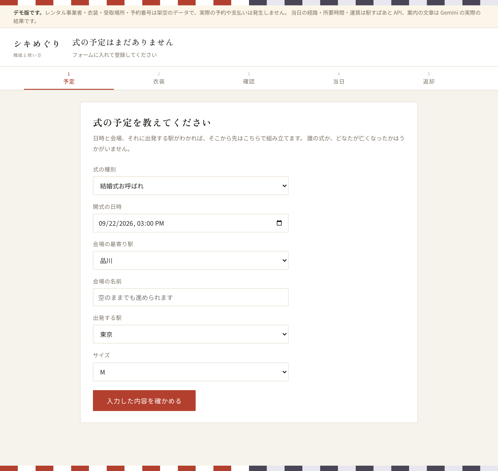
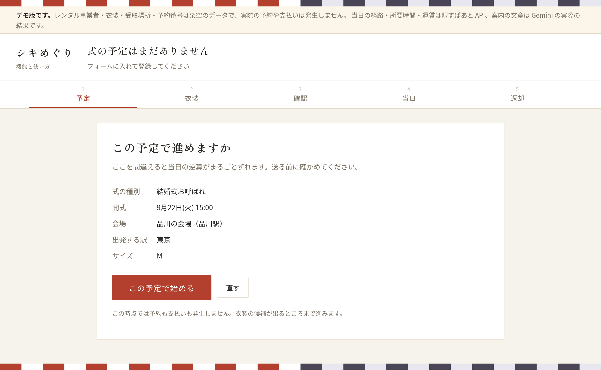
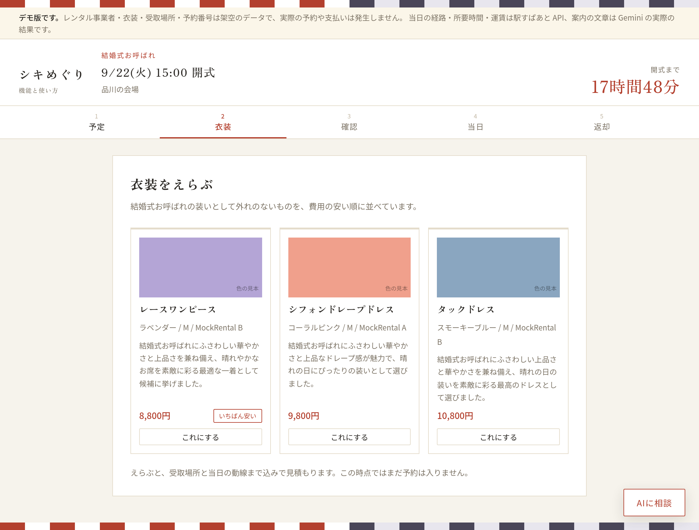
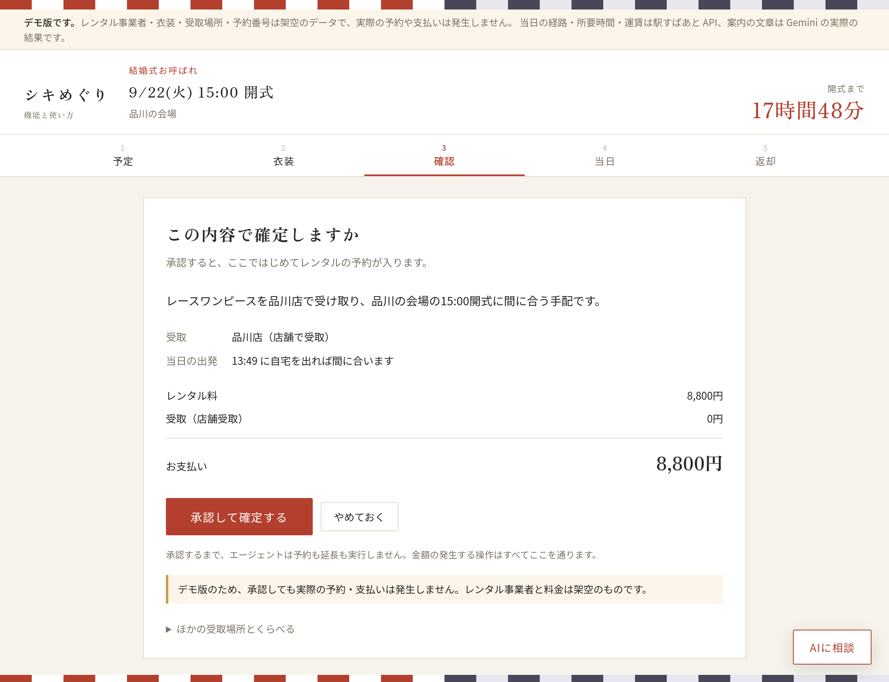
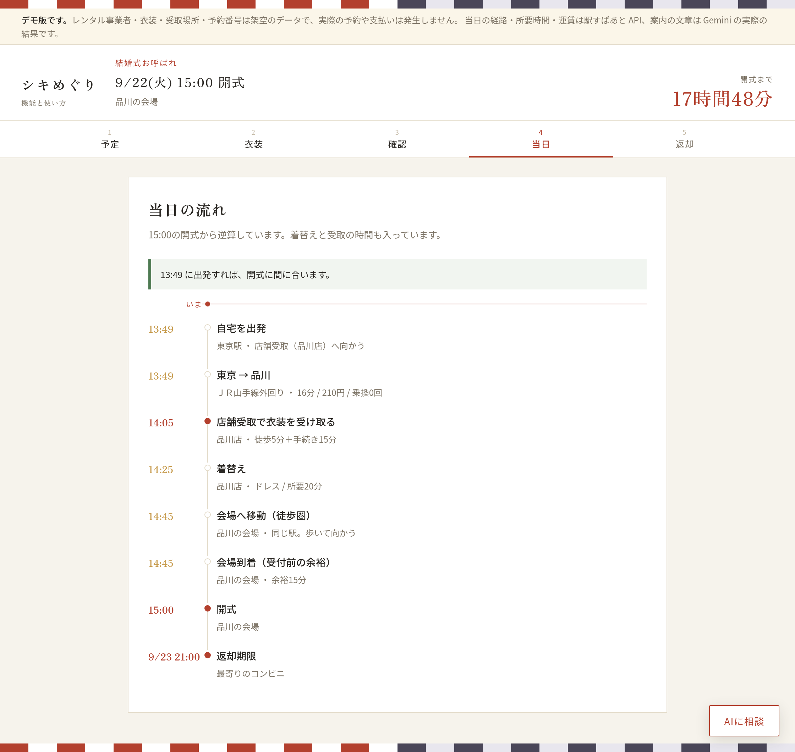
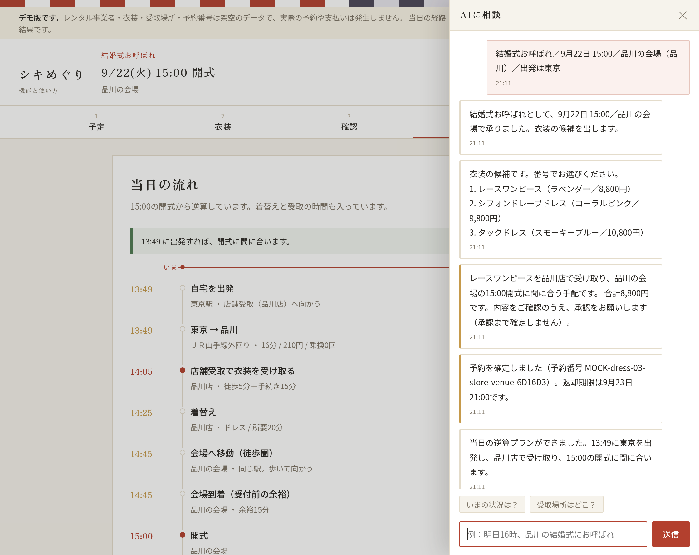

冠婚葬祭レンタル×移動エージェント
式の衣装を選び、受取場所・当日の動線・返却までエージェントが仕切ります。 衣装レンタルの「借りるまで」で終わっていた体験を、「式が終わって返すまで」に広げました。 お金が動く操作だけは、必ずあなたの承認を通します。
デモ版です。レンタル事業者・衣装・受取場所・予約番号は架空のデータで、
実際の予約や支払いは発生しません。
当日の経路・所要時間・運賃は駅すぱあと API、案内の文章は Gemini による実際の結果です。
式に出るのは、衣装を借りることだけでは終わりません。 当日までに決めることと、当日に動くことが山ほど残ります。そこを引き受けます。
式の種別からドレスコードを外さない候補に絞り、費用の安い順に並べます。色とサイズと事業者も添えます。
自宅配送・店舗・駅のロッカーを、当日の移動時間と手数料と運賃を足し合わせて比べます。安いだけの案は選びません。
開式から時間をさかのぼって出発時刻を出します。受取の手続きも着替えも、時間として計算に入っています。
受取の手続き、着替え、乗換、受付前の余裕まで積んだうえで、間に合うかどうかをはっきり出します。間に合わない案は最初から選びません。
返却期限を見張って、近づいたら声をかけます。式のあとに店へ戻らなくて済む返し方を選んであります。
翌日の式でも当日中に手配できる受取先だけを出します。誰の式か、どなたが亡くなったかはうかがいません。
予定を入れてから返すまで、実際の画面です。いま何をすればいいかを、一画面にひとつだけ出します。
種別・日時・会場の最寄り駅・出発する駅を選びます。誰の式かは訊かれません。

ここを間違えると当日の逆算がまるごとずれます。登録する前に一度見せます。

候補が出ます。えらんでも、この時点ではまだ予約は入りません。

受取場所と出発時刻、内訳と合計を見て承認します。ここで初めて予約が入ります。承認するまで、エージェントは1円も確定しません。 （デモ版では、承認しても実際の予約・支払いは発生しません）

開式から逆算した一日が出ます。「いま」の位置が入るので、どこまで進んだかが分かります。

右下のボタンでいつでも開けます。返却期限の注意もここに届きます。
